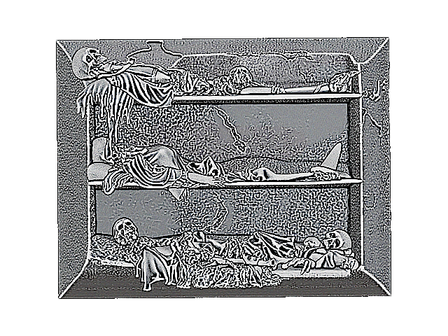
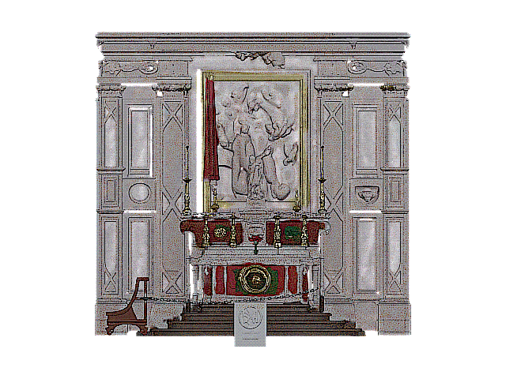

Chiesa delle Anime Sante del Purgatorio

Le catacombe

L'altare
La chiesa delle Anime Sante del Purgatorio è uno dei gioielli nascosti del borgo. Qui potrai trovare stucchi del Serpotta, tele di Giovanni Bonomo, le catacombe e anche un antico colatoio in cui veniva svolto il primo processo della procedura di imbalsamazione. La chiesa è fruibile grazie alla Confraternita delle Anime Sante del Purgatorio, che oltre a garantire guide esperte la domenica organizza eventi volti alla promozione del territorio.
🕯️ Festa della Confraternita
Sabato 16 agosto – ore 18:30 – Sotto le stelle della Confraternita
Una serata organizzata dalla Confraternita delle Anime Sante del Purgatorio, aperta a tutta la comunità caccamese, davanti e all'interno della chiesa. Si apre con il concerto di Renato Filippello e di una violinista, seguito da un momento dedicato ai bambini e da un rosario sotto le stelle. A chiudere la serata, un momento di convivialità con pane, olio e vino. Durata prevista: circa due ore/due ore e mezza.